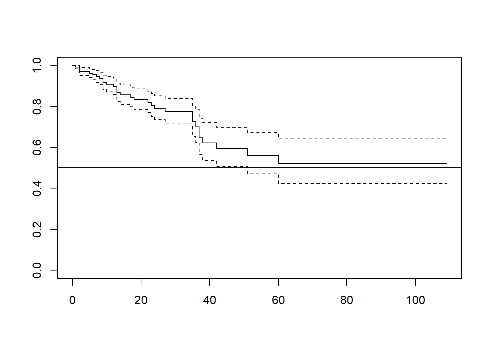

3.4 Kaplan-Meier curves
2020-03-16
3.4.1 Example from classe (code from the professor)
#Load the library required for a survival analysis
library(splines)
library(survival)
#Read data
data<-read.csv("2.UploadedData/data2.csv",sep=";",dec=",")Variables included in the dataset:
## 'data.frame': 274 obs. of 11 variables:
## $ id : int 1 3 7 9 11 13 15 17 19 21 ...
## $ fu : num 7 22 13 42 5 13 70 51 25 5 ...
## $ event : int 1 0 0 1 0 1 0 1 0 0 ...
## $ event_HD : int 0 0 0 0 1 0 0 0 1 1 ...
## $ event_RT : int 0 1 1 0 0 0 1 0 0 0 ...
## $ event_CR : int 1 3 3 1 2 1 3 1 2 2 ...
## $ peritonitis: int 0 1 1 1 1 0 1 0 1 1 ...
## $ sex : int 1 1 0 0 0 0 1 0 1 1 ...
## $ age : int 60 41 38 46 51 36 43 71 31 50 ...
## $ diab : int 1 1 0 0 0 0 0 1 0 0 ...
## $ first : int 0 0 1 0 0 1 1 0 0 1 ...Kaplan-Meier survival curve
## Call: survfit(formula = Surv(data$fu, data$event) ~ 1)
##
## n events median 0.95LCL 0.95UCL
## 274 62 NA 51 NA## Call: survfit(formula = Surv(data$fu, data$event) ~ 1)
##
## time n.risk n.event survival std.err lower 95% CI upper 95% CI
## 1 274 2 0.993 0.00514 0.983 1.000
## 2 266 6 0.970 0.01034 0.950 0.991
## 5 242 2 0.962 0.01171 0.940 0.986
## 6 232 2 0.954 0.01299 0.929 0.980
## 7 220 2 0.945 0.01425 0.918 0.974
## 8 210 2 0.936 0.01547 0.906 0.967
## 9 198 4 0.917 0.01782 0.883 0.953
## 10 190 2 0.908 0.01889 0.871 0.946
## 12 176 2 0.897 0.02004 0.859 0.938
## 13 174 6 0.866 0.02299 0.823 0.913
## 14 166 2 0.856 0.02386 0.811 0.904
## 17 150 2 0.845 0.02487 0.797 0.895
## 18 144 2 0.833 0.02587 0.784 0.885
## 22 128 2 0.820 0.02706 0.769 0.875
## 23 114 2 0.806 0.02843 0.752 0.863
## 24 110 2 0.791 0.02974 0.735 0.851
## 27 94 2 0.774 0.03140 0.715 0.838
## 35 62 4 0.724 0.03802 0.653 0.803
## 36 58 2 0.699 0.04061 0.624 0.783
## 37 54 4 0.647 0.04510 0.565 0.742
## 38 50 2 0.621 0.04687 0.536 0.720
## 42 46 2 0.594 0.04857 0.506 0.698
## 51 36 2 0.561 0.05118 0.470 0.671
## 60 28 2 0.521 0.05482 0.424 0.641Plot survival curve with confidence intervals

Kaplan-Meier survival according to diabetes
## Call: survfit(formula = Surv(data$fu, data$event) ~ data$diab)
##
## n events median 0.95LCL 0.95UCL
## data$diab=0 206 38 NA NA NA
## data$diab=1 68 24 37 36 NA## Call: survfit(formula = Surv(data$fu, data$event) ~ data$diab)
##
## data$diab=0
## time n.risk n.event survival std.err lower 95% CI upper 95% CI
## 1 206 2 0.990 0.00683 0.977 1.000
## 2 202 4 0.971 0.01179 0.948 0.994
## 6 178 2 0.960 0.01396 0.933 0.988
## 8 160 2 0.948 0.01616 0.917 0.980
## 9 148 2 0.935 0.01830 0.900 0.972
## 10 146 2 0.922 0.02017 0.883 0.963
## 12 132 2 0.908 0.02215 0.866 0.953
## 13 130 6 0.866 0.02694 0.815 0.921
## 17 110 2 0.851 0.02866 0.796 0.909
## 23 88 2 0.831 0.03110 0.772 0.894
## 27 72 2 0.808 0.03425 0.744 0.878
## 35 48 4 0.741 0.04500 0.658 0.834
## 37 42 2 0.705 0.04929 0.615 0.809
## 38 40 2 0.670 0.05276 0.574 0.782
## 42 36 2 0.633 0.05601 0.532 0.753
##
## data$diab=1
## time n.risk n.event survival std.err lower 95% CI upper 95% CI
## 2 64 2 0.969 0.0217 0.9270 1.000
## 5 56 2 0.934 0.0319 0.8737 0.999
## 7 52 2 0.898 0.0395 0.8240 0.979
## 9 50 2 0.862 0.0454 0.7778 0.956
## 14 44 2 0.823 0.0511 0.7288 0.930
## 18 38 2 0.780 0.0568 0.6760 0.900
## 22 34 2 0.734 0.0621 0.6218 0.866
## 24 24 2 0.673 0.0704 0.5481 0.826
## 36 14 2 0.577 0.0872 0.4288 0.775
## 37 12 2 0.481 0.0955 0.3255 0.709
## 51 6 2 0.320 0.1123 0.1612 0.637
## 60 4 2 0.160 0.0978 0.0484 0.530Plot survival curve according to diabetes
plot(KM.diab, col = c("red", "blue"), mark.time = F,
ylim=c(0,1), xlab="time", ylab = "S")
legend("topright", title="Diabetes", legend=c("No","Yes"),
col=c("red","blue"), lty=1:1, cex=0.8)Log-rank test
H0: No difference between the groups.
## Call:
## survdiff(formula = Surv(data$fu, data$event) ~ data$diab, rho = 0)
##
## N Observed Expected (O-E)^2/E (O-E)^2/V
## data$diab=0 206 38 47.5 1.89 8.27
## data$diab=1 68 24 14.5 6.19 8.27
##
## Chisq= 8.3 on 1 degrees of freedom, p= 0.004